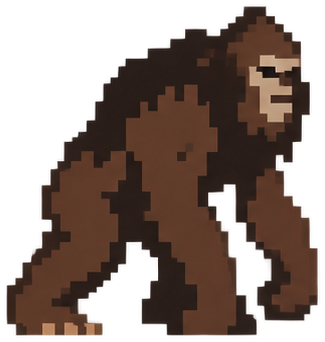
Bigfoot
MythicCone-headed, russet-furred, built like a linebacker.
- Height
- 6–10 ft (1.8–3 m)
- Diet
- Berries, roots and salmon — and coolers left unattended
- Base value
- 22,500 coins
- Base XP
- 415
- Trophy drop
- Matted Fur Tuft
34 legendary creatures to track, and the unique trophy each one leaves behind.
No matching entries. Try another name.

Cone-headed, russet-furred, built like a linebacker.
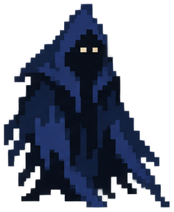
No fixed shape — shadow, draught, and bad intent.
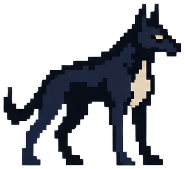
Shaggy black hound with a single saucer eye of fire.
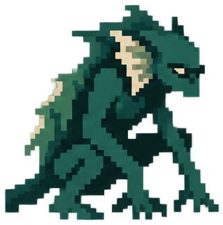
Green, scaly, clawed, with fingers that go on forever.
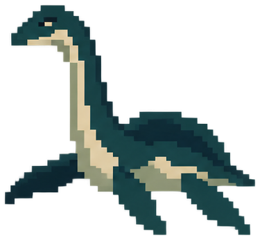
Small head, long neck, humped back — a plesiosaur that missed the memo.
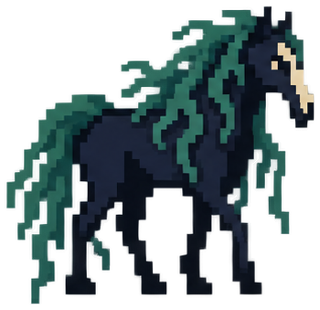
A perfect pony by the riverbank — weeds in its mane, hide like glue.
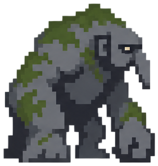
Big, ugly, mossy, with a nose you could hang a coat on.
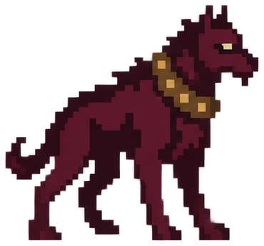
A monstrous hound, chest matted red, chained at a cave mouth.
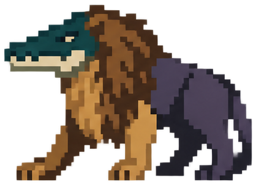
Crocodile head, lion forequarters, hippo hindquarters — Egypt's three worst bites on one body.
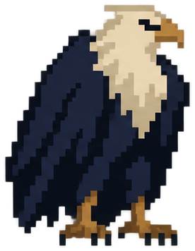
A bird of prey so large it blots the sun; talons like grapnels.
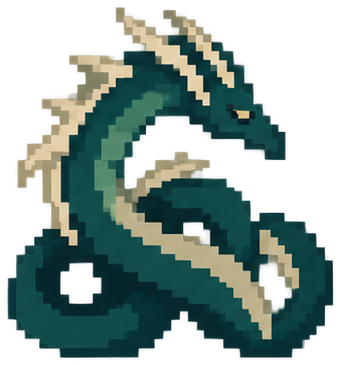
Dark humped coils like a string of buoys; a horse-like head held high.
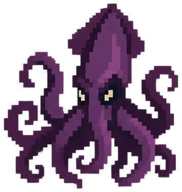
A cephalopod the size of a headland; its back mistaken for an island.
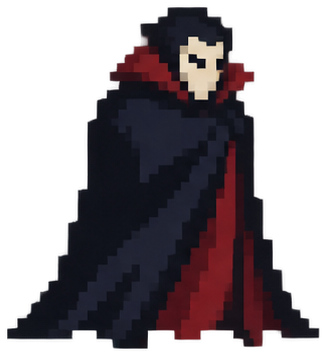
Pale, cold, immaculate, with a smile that shows too much tooth.
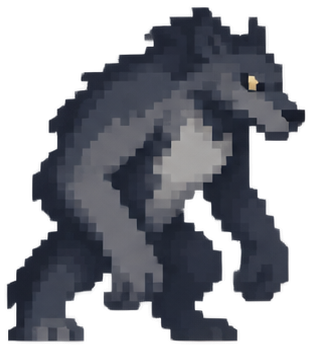
A man-shaped wolf, or a wolf-shaped man, depending on the moon.
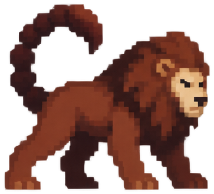
A blood-red lion's body, a man's face with three rows of teeth, a scorpion tail that fires spines.
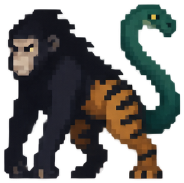
A monkey's face, a tanuki's body, a tiger's legs and a snake for a tail.
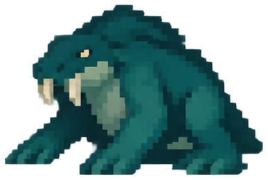
Shaggy or scaled, with flippers, tusks, sometimes a dog's face, sometimes horns.
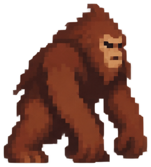
Ape-shaped, black or brown fur, big fangs, and a smell that arrives first.
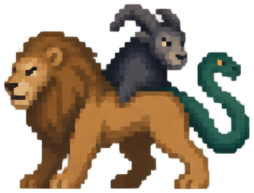
A lion in front, a goat rising from the spine, a live serpent for a tail — all breathing fire.
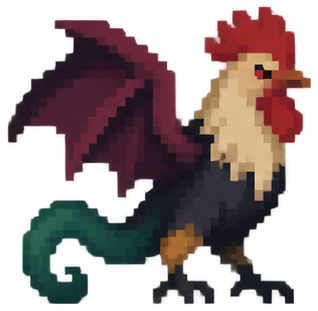
A cockerel's body, a dragon's tail, and a stare that kills.
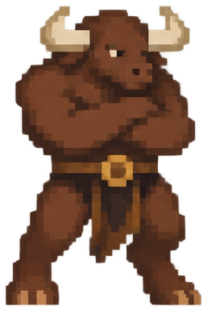
A man's body under a bull's head, and a temper to match.
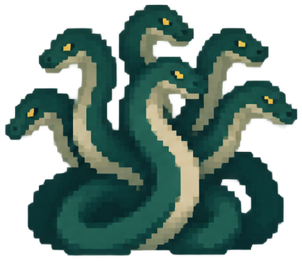
A swamp serpent whose stumps sprout two heads for every one you take.
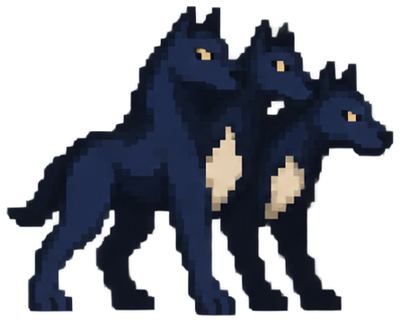
A giant three-headed dog with a serpent tail and a mane of snakes.
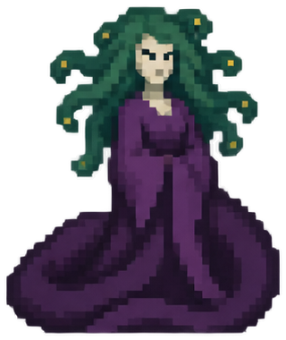
A woman with living snakes for hair and a gaze that turns flesh to stone.
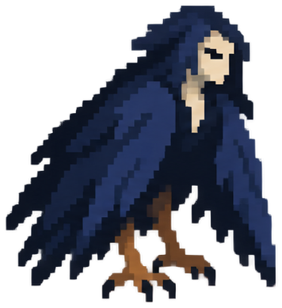
Vulture bodies with the faces of starving women; filthy, fast, foul-smelling.
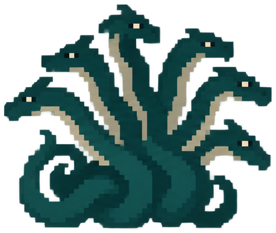
A woman to the waist, then six long-necked dog-headed serpents and twelve groping feet.
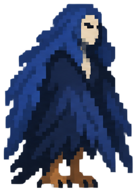
Feathered from the waist down, perched on a reef of old shipwrecks and older bones.
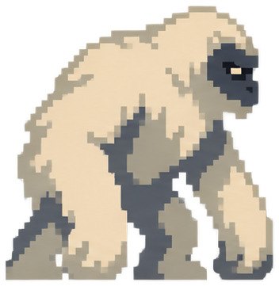
White-to-rust shaggy fur, a conical skull, feet that leave craters in the snow.
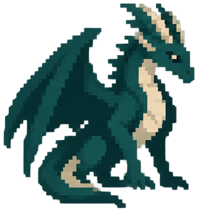
Armoured scales, a furnace throat, and eyes that have watched dynasties rise and fall.
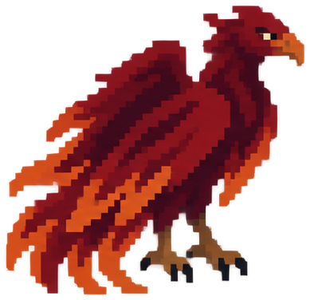
Plumage of red and gold lit from within; trails embers.
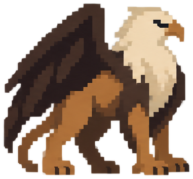
An eagle's head, wings and foretalons on the body of a lion.
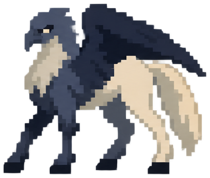
An eagle's head and wings on the hindquarters of a horse — foal of a griffin and a mare.
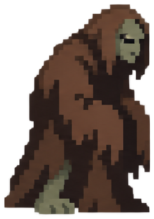
Grey-skinned, hollow-eyed, moving like it forgot how joints work.
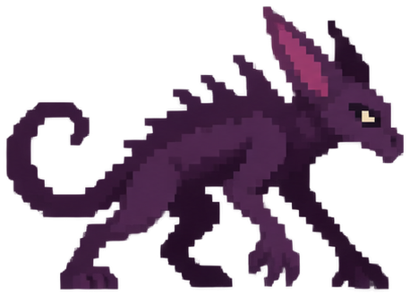
Spiny-backed dog-reptile with glowing red eyes.
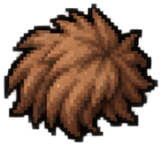
+8% success on Mythical tracking choices
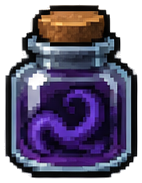
20% chance a tracking mistake is ignored
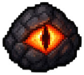
+6% XP while below 50% HP
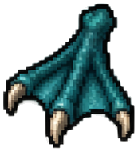
+3 percentage points to Perfect Catch chance
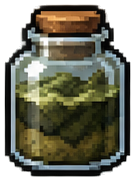
+12% chance to receive hunt crate drops
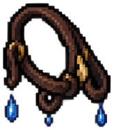
Travel time -12%
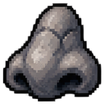
HP regeneration +20%
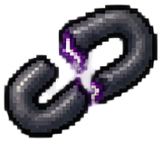
Mythical KO money loss -25%
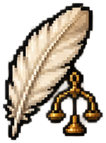
Sell value +6%
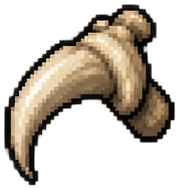
Combat accuracy +6%
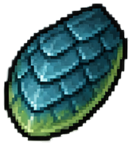
Incoming combat damage -8%
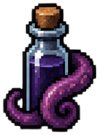
15% chance a Global Sighting clue counts twice
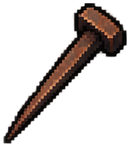
Restore 3 HP after a successful hunt
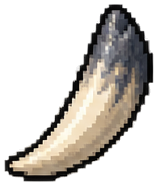
Damage against Mythicals +10%
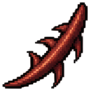
Punch/Kick attack accuracy +10%
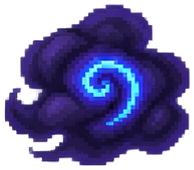
+8% Luck during world conditions
Hunting Camp capacity +20%
Hunting Camp production +10%
First successful hit in a fight deals +10 bonus damage
8% chance an enemy skips its next attack
+1 allowed mistake during Mythical tracking
Once/day, a lethal hit leaves you at 1 HP instead
Maximum HP +15
Marks the riskiest choice during each tracking step
Hunt cooldown -0.35 sec
8% chance a successful combat attack hits twice
Flee success against Mythicals +20%
First enemy hit each fight deals 50% less damage
First hit applies burn for bonus damage over 3 turns
Once/day, a KO restores you to 30 HP after the fight
+6% Luck
10% chance travel completes instantly
12% chance ammunition isn't consumed on a hunt
Perfect Catches restore 6 HP